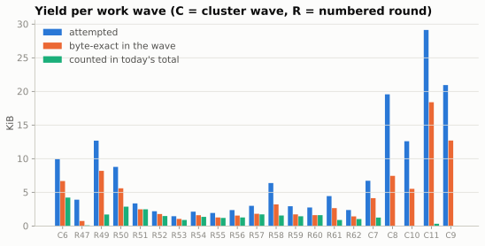
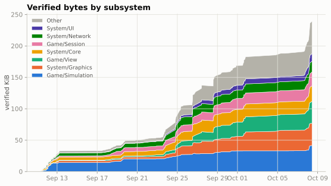
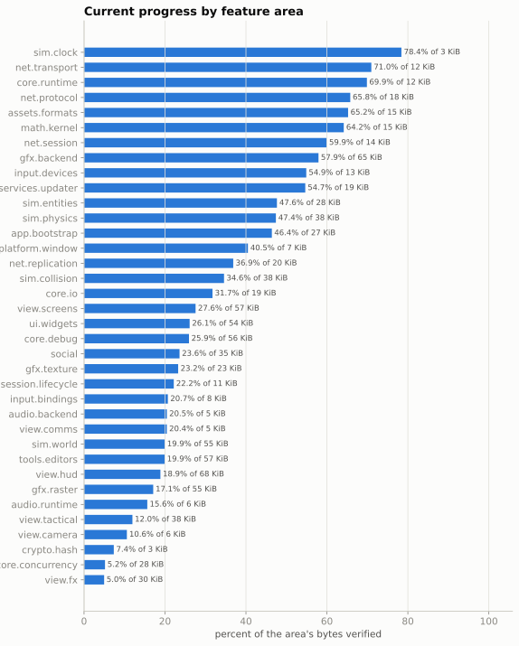
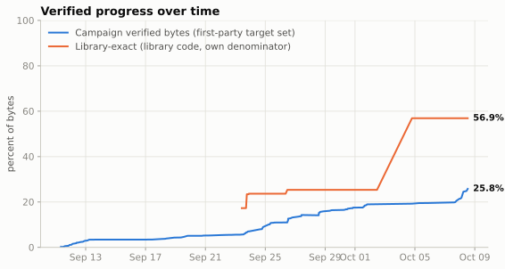

Wulfram II Reconstruction Progress
Progress metrics for a byte-exact reconstruction of the Wulfram II game client. This site publishes numbers, charts and prose only; the reconstruction itself is not published here.
Snapshot of 2026-10-08 · 244 measured commits since 2026-09-11
Progress over time
From 0.27% on 2026-09-11 to 25.80% now. The shaded area is verified code; the dashed line is the whole first-party target, which moves a little as the inventory is corrected.
Where the verified code is
Each box is a feature area, sized by how much code it holds and shaded by how much of it is verified.
Table: feature areas
| area | verified % | verified bytes | area bytes |
|---|---|---|---|
| sim.clock | 69.2% | 1,967 | 2,843 |
| net.protocol | 61.0% | 11,109 | 18,207 |
| core.runtime | 59.9% | 7,208 | 12,024 |
| assets.formats | 59.9% | 9,158 | 15,278 |
| net.transport | 55.7% | 6,976 | 12,514 |
| math.kernel | 53.4% | 8,352 | 15,641 |
| net.session | 49.0% | 6,860 | 14,005 |
| services.updater | 47.0% | 9,266 | 19,712 |
| input.devices | 46.4% | 6,132 | 13,219 |
| app.bootstrap | 43.2% | 11,906 | 27,558 |
| sim.physics | 42.2% | 16,369 | 38,806 |
| gfx.backend | 40.3% | 26,960 | 66,828 |
| net.replication | 33.2% | 6,754 | 20,317 |
| sim.entities | 30.1% | 8,643 | 28,700 |
| platform.window | 28.9% | 2,144 | 7,418 |
| sim.collision | 24.7% | 9,483 | 38,411 |
| ui.widgets | 23.4% | 13,045 | 55,790 |
| view.screens | 21.4% | 12,480 | 58,444 |
| core.debug | 21.3% | 12,149 | 57,121 |
| social | 20.5% | 7,292 | 35,515 |
| audio.backend | 20.5% | 1,066 | 5,212 |
| gfx.texture | 20.4% | 4,895 | 23,996 |
| session.lifecycle | 19.1% | 2,213 | 11,580 |
| view.comms | 17.7% | 926 | 5,244 |
| view.hud | 17.4% | 12,130 | 69,726 |
| core.io | 17.3% | 3,443 | 19,930 |
| input.bindings | 16.7% | 1,319 | 7,899 |
| audio.runtime | 15.6% | 1,040 | 6,656 |
| gfx.raster | 15.0% | 8,385 | 55,913 |
| tools.editors | 14.8% | 8,594 | 57,988 |
| sim.world | 14.4% | 8,110 | 56,378 |
| view.tactical | 12.0% | 4,594 | 38,434 |
| view.camera | 8.5% | 549 | 6,436 |
| crypto.hash | 7.4% | 220 | 2,992 |
| view.fx | 5.0% | 1,522 | 30,657 |
| core.concurrency | 4.3% | 1,251 | 28,893 |
| third-party.bzip2 | 0.0% | 0 | 169 |
What's left
The 676.9 KiB of first-party code not yet verified, grouped by what is blocking it. Buckets come from the dependency census of 2026-10-04, minus everything verified since, so they only shrink between census refreshes.
Why the interlinked code is split by area: it used to appear here as one very large block, which hid where the work is and how it moves. It is really many groups, each unlocked once a handful of shared helpers (hubs) are rebuilt, so each line names the feature area the code belongs to, matching the rows of the map below. The lines add up to the interlinked total exactly. "Done" is the share of the area's interlinked code at census time that has been verified since; "hubs" is how many distinct hubs that code still waits on, and one hub can serve several areas. "Loosened since the census" is code that no longer waits on any hub and will move to another bucket at the next census. The groups as the compiler tied them are in the deep dive further down.
Table and full definitions
| bucket | bytes | share | done since census | hubs |
|---|---|---|---|---|
| Plain singles | 183,478 | 26.5% | ||
| Closed clusters | 101,076 | 14.6% | ||
| Frame / alignment classes | 63,515 | 9.2% | ||
| Interlinked code | 341,149 | 49.2% | ||
| HUD & targeting | 36,377 | 5.2% | 0.6% | 42 |
| In-game editors | 30,122 | 4.3% | 2.2% | 63 |
| World, entities & game data | 29,661 | 4.3% | 1.6% | 52 |
| Map & tactical view | 27,518 | 4.0% | 1.2% | 41 |
| 3D rendering & camera | 27,065 | 3.9% | 2.7% | 46 |
| UI widgets & menus | 24,786 | 3.6% | 5.3% | 53 |
| Visual effects | 24,368 | 3.5% | 37 | |
| Game screens & states | 22,737 | 3.3% | 6.7% | 53 |
| Social, chat & lobby | 20,754 | 3.0% | 0.5% | 22 |
| Textures & images | 12,438 | 1.8% | 3.6% | 22 |
| Networking | 11,502 | 1.7% | 0.7% | 16 |
| Debug tools & console | 10,420 | 1.5% | 3.6% | 12 |
| Startup & config | 8,645 | 1.2% | 12 | |
| Audio & voice | 7,315 | 1.1% | 7 | |
| Input & controls | 6,852 | 1.0% | 6.7% | 22 |
| Graphics drivers (DirectX/GDI) | 4,466 | 0.6% | 2.6% | 6 |
| Core runtime & platform | 2,336 | 0.3% | 14.0% | 12 |
| Unattributed (no TU yet) | 2,132 | 0.3% | 7 | |
| Physics & collision | 516 | 0.1% | 12.7% | |
| Updater (CSN) | 272 | 0.0% | ||
| Loosened since the census | 30,867 | 4.5% | ||
| Policy-held | 3,965 | 0.6% |
- Plain singles
- functions with a standard calling convention, no register inputs from callers and no compiler frame-alignment demand; each can be attempted on its own. Includes single-function units the census put on the plain-single track, the census single-candidate list (split into 'worth a singles wave' and the rest), and a residual of first-party bytes that the census did not place in any unit (large, x87-heavy, complex exception handling or otherwise outside its filters).
- Closed clusters
- groups of functions that whole-program optimisation tied together through custom register conventions, whose closure is complete (every member's callers are inside the group). Grouped by size class: number of members and bytes.
- Frame / alignment classes
- single functions or groups whose stack-frame shape (8- or 64-byte realignment, padding slots) depends on callers or callees; reproducing them needs the right neighbours compiled together. Includes groups whose frame chain went beyond the census pull limit.
- Interlinked code
- functions that call each other through calling conventions the compiler chose privately across the whole program, so a function can only be rebuilt once the shared helpers (hubs) it depends on are rebuilt and published. In the census these chain into one very large connected group of over a thousand functions; here it is split by feature area. Each subsection gives its bytes, the share of its census-time code verified since the census, and how many distinct hubs its code still waits on (a hub can serve several areas, so subsection hub counts overlap). 'Loosened since the census' is code the current work map no longer finds in the tangle because hubs it depended on were verified; it moves to another bucket at the next census refresh.
- Policy-held
- work that is held by a process rule rather than by difficulty: units reserved for another work lane, units that need an ownership ruling on a calling-convention contradiction, and results that are proven but not countable under the current counting rules.
Library code is measured on its own line: 174.7 KiB exact, 81.5 KiB pending.
Where the remaining work is
All 713.2 KiB of unverified target code (2,453 functions; this includes the 38.1 KiB of rows found to be library code that "What's left" leaves out), placed on two axes: the feature area it belongs to, and the structural kind of problem it is. A darker cell holds more code. Hover a cell for exact figures.
How ready it is
Compiler quirks behind the stuck code: register allocation 11.1 KiB, stack-slot order 7.8 KiB, instruction order 5.6 KiB, floating-point stack order 2.7 KiB, exception-handling state 1.0 KiB, other 0.4 KiB, whole-program register assumption 0.1 KiB. Rule decisions: 38.1 KiB is library code counted as game code, 33.7 KiB other process decisions. 254.3 KiB has never been attempted by a porting wave (much of it was drafted automatically). 6.3 KiB already matches in the provisional draft link, which is not counted. Hub counts overlap between areas, because one hub can serve several.
Interlinked code: how it's being unlocked
The interlinked code is 1,055 functions (320.1 KiB) that pass values to each other in registers the compiler picked for the whole program, rather than in the standard way. A function can only be rebuilt once the shared helpers it calls, its hubs, are rebuilt with the same conventions, so the work goes hub by hub. There are 269 hubs in all. 412 functions (157.4 KiB) form a tightly meshed centre that no single hub cuts apart; the rest hangs off it, one hub away.
A standard community-detection method splits the interlinked code into the groups below. Each group is named after the feature area that holds most of its code, with letters when an area has several.
Groups
| group | functions | bytes | hubs inside | hubs waited on |
|---|---|---|---|---|
| Social, chat & lobby A | 102 | 47,174 | 26 | 30 |
| 3D rendering & camera A | 74 | 26,122 | 16 | 28 |
| Debug tools & console A | 44 | 18,120 | 11 | 12 |
| Startup & config | 57 | 17,605 | 10 | 12 |
| Networking | 56 | 16,643 | 15 | 18 |
| HUD & targeting A | 42 | 14,273 | 8 | 8 |
| Visual effects A | 53 | 13,795 | 17 | 21 |
| 3D rendering & camera B | 47 | 13,445 | 16 | 16 |
| In-game editors A | 45 | 13,058 | 15 | 19 |
| Debug tools & console B | 32 | 12,585 | 9 | 9 |
| World, entities & game data A | 54 | 12,312 | 15 | 15 |
| Map & tactical view A | 43 | 11,792 | 13 | 17 |
| Visual effects B | 33 | 10,762 | 11 | 11 |
| Game screens & states A | 24 | 10,693 | 6 | 8 |
| In-game editors B | 47 | 9,431 | 14 | 17 |
| Visual effects C | 24 | 8,477 | 6 | 7 |
| 3D rendering & camera C | 12 | 8,363 | 2 | 3 |
| Map & tactical view B | 26 | 7,958 | 4 | 5 |
| Textures & images A | 27 | 7,740 | 10 | 12 |
| Audio & voice | 33 | 7,634 | 7 | 7 |
| Social, chat & lobby B | 36 | 6,810 | 7 | 7 |
| World, entities & game data B | 19 | 6,589 | 6 | 7 |
| World, entities & game data C | 17 | 5,184 | 5 | 6 |
| 3D rendering & camera D | 18 | 3,894 | 5 | 8 |
| Textures & images B | 16 | 3,699 | 5 | 5 |
| HUD & targeting B | 22 | 3,644 | 4 | 5 |
| World, entities & game data D | 14 | 2,636 | 2 | 2 |
| UI widgets & menus A | 13 | 2,519 | 0 | 1 |
| UI widgets & menus B | 8 | 1,924 | 0 | 0 |
| UI widgets & menus C | 8 | 1,863 | 3 | 3 |
| Game screens & states B | 8 | 1,047 | 1 | 1 |
Where the hubs are
| area | hubs | hub bytes |
|---|---|---|
| UI widgets & menus | 44 | 8,636 |
| Visual effects | 32 | 8,974 |
| 3D rendering & camera | 31 | 7,371 |
| World, entities & game data | 31 | 7,965 |
| Textures & images | 18 | 4,193 |
| In-game editors | 17 | 3,125 |
| HUD & targeting | 15 | 5,132 |
| Map & tactical view | 13 | 3,234 |
| Input & controls | 12 | 2,010 |
| Debug tools & console | 11 | 4,910 |
| Game screens & states | 10 | 2,750 |
| Core runtime & platform | 9 | 991 |
| Social, chat & lobby | 7 | 1,783 |
| Audio & voice | 7 | 2,011 |
| Networking | 5 | 1,129 |
| Graphics drivers (DirectX/GDI) | 4 | 1,336 |
| Unattributed (no TU yet) | 2 | 309 |
| Startup & config | 1 | 89 |
Hubs are counted by the area they belong to, not named.
Kinds and definitions
- Stand-alone functions
- Ordinary functions that can each be rebuilt on their own.
- Small groups (plain build)
- Small groups outside the whole-program-optimised part of the game, tied by private calling conventions inside one source file.
- Small optimiser-bound groups
- Up to 8 functions the whole-program optimiser bound together; rebuilt as one unit.
- Large optimiser-bound groups
- 9 to 99 functions bound together; rebuilt as one unit.
- Stack-layout groups
- Functions whose stack layout depends on their callers or callees, so neighbours are compiled together.
- Interlinked (hub-blocked)
- Functions tied to each other through compiler-chosen calling conventions; each waits on the shared helpers (hubs) it calls, and is unlocked hub by hub.
- Library code counted as game code
- Rows in the game's own count that turned out to be statically linked library code.
- Tiny stubs and data
- Jump stubs, tiny bodies and data-like rows.
- Hub
- a function in the interlinked code that takes register inputs and is called from two or more other interlinked functions. Hubs are counted, never named.
- Hubs waited on
- the number of distinct hubs a group's functions are or call directly. A hub can serve several groups or areas, so these counts overlap.
areas, kinds, readiness and communities are computed mechanically but rest on heuristics (area roll-up, core/fringe split, plateau classes, transcribed holds); treat them as a map, not a ledger.
How we count, and the exceptions
Every byte counted in the byte-exact tier is identical to the original. That is 251,991 bytes in 1,913 functions. Each one, recompiled with the period compiler (Microsoft Visual C++ 2005) and the original flags, gives exactly the original machine code. Every address reference agrees with the original, and a deliberate mutation of the source is shown to break the match.
The campaign headline is that tier plus 2,519 bytes (26 functions) verified by behaviour on a lower proof tier, 254,510 bytes in all. The flags below describe how a unit was admitted or attributed, meaning which evidence rules it relied on. Apart from the behaviour-verified row, they are not about bytes that fail to match. Each flag is listed so it can be revisited, and most are expected to be temporary.
| Category | Bytes | % of counted | Match | Nature | Plan / status |
|---|---|---|---|---|---|
| Shared-context rule (provisional) | 5,298 40 fn | 2.08% of counted | identical | Byte-identical. These functions sit in multi-function units whose only outside helpers are functions that were already verified; those helpers ride along unchanged as shared build context and are not counted a second time. The open question is the admission rule, not the bytes. | Gate rule under review. If it is tightened, the whole block can be taken out of the count in one step. |
| Behaviour-verified (lower tier) | 2,519 26 fn | 0.99% of counted | behaviour only | Not yet byte-proven. Each function was run side by side with the original on recorded inputs and gave the same results, with a control that is able to fail. Counted in the campaign figure on a lower proof tier; not part of the byte-exact tier. | Expected to be temporary: these are meant to be replaced by byte-exact versions as their units are rebuilt. |
| Chosen local-variable names | 1,792 5 fn | 0.70% of counted | identical | Byte-identical. The period compiler orders some stack slots by the spelling of local variable names. Where no evidence names the original variable, a name was chosen that reproduces the layout. | Evidence-quality flag; revisit if naming evidence turns up. |
| Invented helpers | 11,056 43 fn | 4.34% of counted | identical | Byte-identical. The source uses a small helper the original may not have had, for example a stand-in caller that gives the compiler the right surrounding context. The helper itself is never counted. | Evidence-quality flag; revisit and replace with the original structure where it can be identified. |
| References to not-yet-named globals | 56,717 281 fn | 22.29% of counted | identical | Byte-identical, and every reference lands on the same address as in the original. The referenced global or function simply has no independently backed name yet. | Naming work; the bytes and addresses already agree. |
| Older alignment annotation | 420 4 fn | 0.17% of counted | identical | Byte-identical, but the source reproduces the stack frame with an explicit alignment annotation. A later study of frame alignment suggests the original was written differently. | Grandfathered; due to be re-ported the newer way. |
Apart from the behaviour-verified row, these flags describe how a unit was admitted or attributed (the evidence rules), not bytes that fail to match. A function can carry more than one flag, so the rows overlap and do not add up.
- Library tier: provisional bss gap fit. Library tier only: library bytes admitted under an evidence rule marked provisional. Under review; never part of the first-party figure.
A draft-link tier also exists in the private workspace. It links drafted functions into a runnable program for testing. It is provisional and diagnostic, and it is not counted in any number here.
Milestones
- Campaign passed 25% verified
1,939 functions, 254,510 bytes - Campaign passed 20% verified
1,701 functions, 202,527 bytes - Library tier passed 50% exact
172,330 library bytes - Campaign passed 15% verified
1,424 functions, 149,366 bytes - Campaign passed 10% verified
1,130 functions, 100,103 bytes - Campaign passed 5% verified
546 functions, 49,405 bytes - Campaign passed 1% verified
136 functions, 10,687 bytes
Latest changes
- +9,275 bytes to 25.80%
Promote 45 verified rulings2 reconstruction functions - +3,170 bytes to 24.86%
Promote 18 verified edge-corrections reconstruction functions - +13,571 bytes to 24.54%
Promote 36 verified clusters11 reconstruction functions - +12,749 bytes to 23.16%
Promote 46 verified queue-b reconstruction functions - +3,672 bytes to 21.87%
Promote 16 verified giant-attack and giant-attack2 h4 reconstruction functions - +797 bytes to 21.50%
Promote 4 verified giant-attack hub functions
The full list is in CHANGELOG.md in the repository.
Work waves
Each wave is a batch of attempts. "Counted now" is the part of the wave that is in today's verified total.

Table: waves
| wave | result date | functions tried | bytes tried | bytes counted now |
|---|---|---|---|---|
| cluster wave 6 | 2026-09-30 | 44 | 10,199 | 4,321 |
| round 47 | 2026-10-01 | 14 | 4,001 | 96 |
| round 49 | 2026-10-04 | 49 | 12,987 | 3,545 |
| round 50 | 2026-10-04 | 34 | 8,990 | 5,075 |
| round 51 | 2026-10-04 | 20 | 3,432 | 2,541 |
| round 52 | 2026-10-04 | 20 | 2,245 | 1,513 |
| round 53 | 2026-10-04 | 20 | 1,488 | 909 |
| round 54 | 2026-10-04 | 20 | 2,181 | 1,387 |
| round 55 | 2026-10-04 | 20 | 1,976 | 1,288 |
| round 56 | 2026-10-04 | 20 | 2,415 | 1,526 |
| round 57 | 2026-10-04 | 20 | 3,072 | 1,767 |
| round 58 | 2026-10-04 | 20 | 6,530 | 1,595 |
| round 59 | 2026-10-04 | 20 | 3,004 | 1,673 |
| round 60 | 2026-10-04 | 20 | 2,819 | 1,651 |
| round 61 | 2026-10-05 | 20 | 4,553 | 914 |
| round 62 | 2026-10-05 | 19 | 2,429 | 1,057 |
| cluster wave 7 | 2026-10-06 | 49 | 6,887 | 3,516 |
| cluster wave 8 | 2026-10-06 | 56 | 20,042 | 5,465 |
| cluster wave 10 | 2026-10-07 | 59 | 12,901 | 2,239 |
| cluster wave 11 | 2026-10-07 | 80 | 29,833 | 16,091 |
| cluster wave 9 | 2026-10-07 | 73 | 21,447 | 6,411 |
More charts: subsystems over time, feature areas as bars, percent over time



What the numbers mean
Byte-exact means a function's reconstructed source, compiled with the same period compiler (Visual C++ 2005) and flags, produces exactly the machine code of the original program, with every address reference checked and a deliberate mutation shown to break the match. A small number of functions are instead counted on a differential-execution test against the original; they are listed in the exceptions table above.
Campaign verified bytes is the headline: verified bytes over all first-party target bytes. First-party excluding library rows moves rows that turned out to be library code out of the denominator. Library-exact measures the statically linked libraries (C runtime, Speex, bzip2, libjpeg) on their own line; it is never added to the first-party figure.